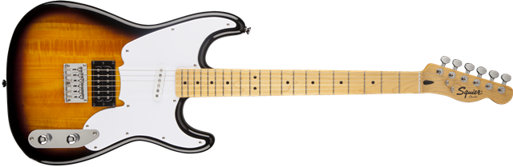

Squier® '51
Overview
The Squier '51 returns in a hot new Vintage Modified model that delivers all the great style and features of the original value-priced screamer of the mid 2000s. All the ’51s enormous tonal versatility is back, with a powerful SH pickup configuration, rotary pickup selector, push-pull coil tap and more.
Features include a basswood body, satin-finish maple neck with "C"-shaped profile, 9.5”-radius maple fingerboard with 21 medium jumbo frets, single-coil Stratocaster neck pickup and hot humbucking bridge pickup, knurled "chrome dome" master volume control knob that also functions as a push-pull bridge pickup coil-selector switch (full humbucking or inner coil only for single-coil bridge pickup tone), knurled "chrome dome" three-position rotary pickup selector switch (in place of a tone control knob), single-ply white pickguard (black pickguard on Vintage Blonde model) and six-saddle hardtail bridge. Available in Two-Color Sunburst, Candy Apple Red and Vintage Blonde.
Specifications
- Model Name: Squier® '51, Maple Fingerboard, 2-Color Sunburst
- Series: Vintage Modified Models
- Color: 2-Color Sunburst
- Scale Length: 25.5"
- Number of Strings: 6
Detailed Description
Body
Body Shape: Stratocaster®
Body Material: Basswood
Body Finish: Gloss Poly
Neck
Neck Material: Maple
Neck Shape: Modern "C"
Scale Length: 25.5" (648 mm)
Fingerboard Radius: 9.5" (241 mm)
Number of Frets: 21
Fret Size: Medium Jumbo
String Nut: Synthetic Bone
Nut Wth: 1.650" (42 mm)
Neck Finish: Satin Poly
Fingerboard: Maple
Position Inlays: Black Dot
Electronics
Bridge Pickup: Hot Humbucking
Neck Pickup: Standard Single-Coil Strat
Controls: Master Volume, 3-Position Rotary
Pickup Switching: 3-Position Rotary Pickup Selector Switch: Position 1. Neck Pickup (Full Clockwise) Position 2. Bridge and Neck Pickups (Middle) Position 3. Bridge Pickup (Full Counterclockwise)
Pickup Configuration: HS
Special Electronics: Push/Pull Coil Selector Switch (On Master Volume Pot): Normal Position: Full Bridge Humbucking Pickup Up Position: Inside Coil of Bridge Humbucking Pickup
Hardware
Brge: Hard-Tail 6-Saddle
Tuning Machines: Standard Die-Cast
Orientation: Right-Hand
Pickguard: 1-Ply White
Control Knobs: Knurled Dome
Miscellaneous
Strings: Fender® USA, NPS, (.009-.042 Gauges)